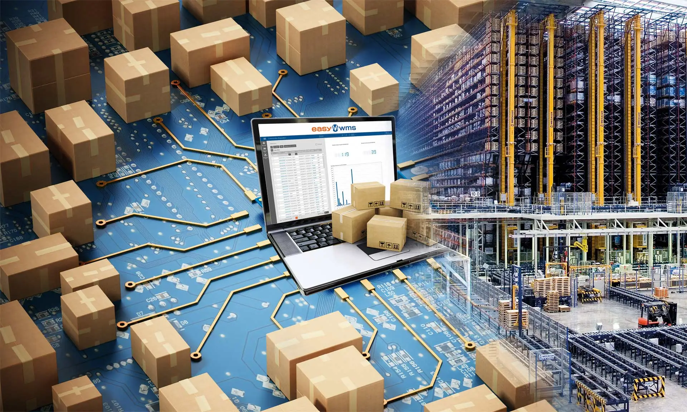
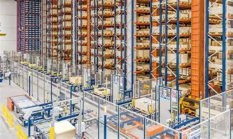
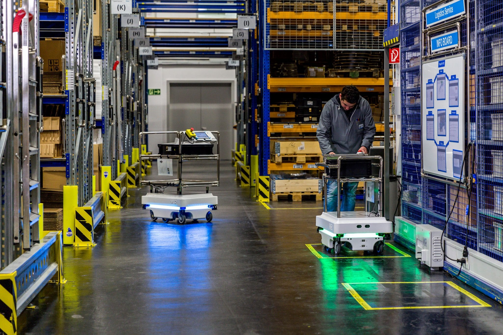

La importancia del ERP en almacenes
Publicado el 19 de Abril de 2026
Integrar herramientas de planificación de recursos empresariales ayuda a prevenir cuellos de botella en la distribución.

Publicado el 19 de Abril de 2026
Integrar herramientas de planificación de recursos empresariales ayuda a prevenir cuellos de botella en la distribución.
Publicado el 10 de Abril de 2026
El proceso de preparación de pedidos puede acelerarse hasta un 40% usando sistemas guiados por luz o voz.
Publicado el 20 de Abril de 2026
Una correcta gestión del inventario permite reducir pérdidas y optimizar el espacio.

Publicado el 20 de Abril de 2026
La automatización mediante robots permite aumentar la productividad.
Publicado el 20 de Abril de 2026
La trazabilidad mejora el control en la cadena de suministro.

Publicado el 20 de Abril de 2026
Los sistemas modernos permiten integrar información en tiempo real.
Publicado el 20 de Abril de 2026
Optimizar procesos ayuda a reducir costos en logística.